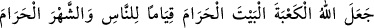
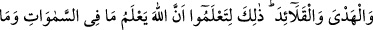
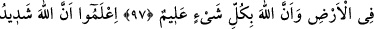
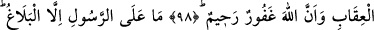
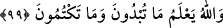
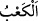
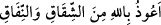

KÂBE’YE HÜRMET
97. Allah Kâbe’yi, o saygıya lâyık evi, haram ayı, hac kurbanını ve (kurbanın
boynuna asılan) gerdanlıkları insanların (din ve dünya işlerinde) ayakta
kalmalarına vesile kıldı. İşte bu, Allah’ın göklerde ve yerde ne varsa hepsini
bildiğini ve Allah’ın her şeyi bilici olduğunu anlamanız içindir.
98. İyi bilin ki Allah’ın cezâsı çetindir ve yine Allah çok bağışlayan ve
esirgeyendir.
99. Peygamber’in üzerine düşen sadece tebliğ etmektir. Allah açıkladığınızı da
gizlediğinizi de bilir.
“Allah Kâbe’yi, o saygıya lâyık evi” “ haccın edâ edildiği haram ayı, hac
kurbanını ve” kurbanın boynuna asılan “gerdanlıkları insanlar” ın din ve dünyâ
işlerinde “ayakta kalmalarına vesile kıldı.”
Beytullah’a “Kâ’be” denilmesi, küp şeklinde olmasındandır. Nitekim Araplar küp
şeklinde olan her eve, ayak bileğinde bulunan aşık kemiğine benzeterek “kâbe” derler.
Bazılarına göre ise Kâbe’ye bu isim, yerden yüksek olması sebebiyle verilmiştir. Bu
kelimenin asıl mânâsı “çıkmak ve yükselmek”tir. Arapça’da aşık kemiği’ne “
”
denilmesi kabarık olması ve ayağın iki yanından dışarıya doğru çıkması sebebiyledir.
Kâbe ise yeryüzünde şânı yükseldiği ve şöhreti cümle âlemi kapladığı için bu ismi
almıştır.
Es’iletü’l-hikem adlı eserin sahibi Bosnalı Ali Dede şöyle der: “Allah Teâlâ
Kâbe’sini dört köşeli kılmıştır. Hakikatte ise üç köşelidir. Bundan dolayıdır ki aşık
kemiğine benzetilerek ona Kâbe denilmiştir. Kâbe’nin dört köşeli olmasının sırrı ise
mü’minlerin kalplerine işaret etmek içindir. Çünkü mü’min kişinin kalbinde mutlaka şu
dört havâtır bulunur: İlâhî, melekî, nefsânî, şeytanî.
Kâbe’nin Haceri’l-esved köşesi; ilâhî hâtırı ve Yemânî köşesi; melekî hâtırı, Şâmî
köşesi; nefsânî hâtırı ve Irâkî köşesi de şeytanî hâtırı temsil eder. Nitekim tavaf
sırasında Rukn-i Irâkî’ye gelince şer’an “
”yani “Hakka muhalefet